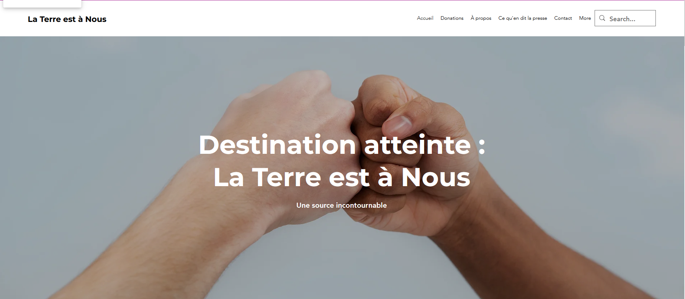
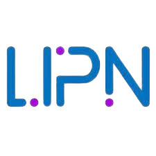

La compétence "Réaliser" a été développée à travers divers projets où j'ai conçu et implémenté des solutions techniques adaptées aux besoins. Au début, cela était très compliqué car je n'avais pas l'expérience nécessaire ni les connaissances pour créer des applications fonctionnelles. En terme de solutions techniques on peut inclure la création de sites web dynamiques, la gestion de bases de données, et les SAÉ 3.01 et 4.01 qui ont été un tremplin pour leur aspect général. Voici ci-dessous les SAÉ qui m'ont permis de développer cette compétence :
La compétence "Gérer les données" est une des compétences qui m'a le plus intéressé dès mon entrée en BUT. J'ai pu apprendre à manipuler des bases de données relationnelles, à écrire des requêtes SQL/NoSQL complexes et à gérer les données de manière efficace et simple. La SAÉ 3.01 et 4.01 ont été des projets clés pour développer cette compétence, car elles m'ont permis de travailler sur des bases de données réelles, on a du la créer nous même et de les peupler avec des données venant d'un fichier excel désordonnée. Je suis passé d'un étudiant qui ne connaissait pas grand chose aux bases de données à un étudiant capable de concevoir et de gérer des bases de données complexes.
La compétence "Conduire un projet" a été développée à travers la SAÉ 2.05, où j'ai appris à planifier, organiser et gérer un projet de A à Z. J'ai acquis des compétences en gestion de projet, en planification et en la coordination d'une équipe. Au début, cela était très compliqué car je n'avais pas aucune notion., je ne savais pas ce qu'était réellement un projet, comment le planifier, comment le gérer, comment le conduire ainsi que les bonnes pratiques. La SAÉ 2.05 a été un réel bénéfice pour moi et m'a permis d'utiliser toutes les notions mobilisées pour les SAÉ 3.01 et 4.01.
La compétence "Collaborer" a été développée à travers divers projets en binôme ou en groupe, où j'ai appris à travailler efficacement avec d'autres personnes, à partager des idées et à résoudre des problèmes ensemble. J'ai également appris à utiliser des outils de collaboration tels que GitHub pour gérer le code source et suivre les modifications entre collaborateurs. Au début, cela était très compliqué car je n'avais pas l'habitude de travailler en équipe. J'étais assez timide et je n'osais pas prendre la parole. J'ai dû apprendre à communiquer efficacement, à écouter les autres et à trouver des solutions en groupe. Le stage de deuxième année a été un réel tremplin pour développer cette compétence, car j'ai travaillé avec tout types de professionels (chercheurs, ingénieurs..) et j'ai du m'adapter à eux ainsi qu'à leurs méthodes de travail.
La compétence Optimiser a été développée à travers divers projets où j'ai appris à améliorer les performances, la sécurité et l'efficacité des applications et des systèmes. Au début, je négligais un peu l'optimisation, pensant que le code fonctionnait bien tel quel. Cependant, j'ai rapidement réalisé que l'optimisation était essentielle pour garantir la robustesse des applications et la satisfaction des utilisateurs. J'ai acquis des compétences en optimisation de code, en gestion des ressources et en amélioration de l'expérience utilisateur. Ce développemnt peut s'illustrer par l'utilisation de la SAÉ 1.01 Santa Clauss qui m'a permis d'être plus à l'aise avec Python. Cette facilité m'a aidé pour le script de nettoyage dans la SAÉ 3.01.
Concernant la compétence Administrer, j'ai appris son importance lors de la SAÉ 3.01 et 4.01, où j'ai dû gérer les connexions, les permissions et la sécurité des données.
J'ai acquis des compétences en administration de bases de données, en gestion des utilisateurs et en sécurité des applications lors de mon stage.
J'ai aussi pu mobiliser cette connaisance via Docker.
Première SAÉ , développement d'un programme Python afin d'optimiser le parcours du père noël en ayant pour objectif de livrer les cadeaux à temps.
Travail en équipe de 2 personnes Développement d'une application complexe permettant de visualiser l'ensemble des jeux de société de la bibliothéque de l'Université Paris 13.
Le projet comprend la création d'une interface utilisateur/administrateur/gestionnaire, la gestion des données et l'implémentation d'algorithmes de recherche. Création d'une application de calculatrice avec gestion d'erreurs et interface utilisateur intuitive.  Projet en binôme alternant les rôles client/développeur. Conception de maquettes et développement web via Wix Peuplement de tables à partir d'un fichier CSV et requêtes SQL complexes. Modélisation avec DB Designer. Reprise du projet SAÉ 4.01, Amélioration du projet avec l'ajout de nouvelles fonctionnalités non abouties, renforcement de la sécurité, amélioration de l'aspect visuel Développement d'une application mobile permettant la recommandation de
voyages basée sur les besoins de l’utilisateur.
Projet de rénovation complète d'une chambre avec cahier des charges, budget, planning PERT, Gantt, planification et gestion d'équipe.  Stage de 10 semaines au sein du LIPN (Laboratoire d'Informatique de Paris Nord). Développement du site pour le département informatique
de l'Institut Galilée. Participation à la création de contenu, optimisation du site et gestion des données.
[✍️ À RÉDIGER] La consigne demande un tableau récapitulatif avec synthèse et auto-évaluation
d'au moins 3 compétences. J'ai pré-rempli les colonnes "Preuves" à partir de ce que tu as
déjà écrit plus haut. Pour la colonne "Niveau atteint" : ouvre le référentiel national du
BUT Informatique (parcours Réalisation d'Applications) et identifie, pour chaque compétence,
à quel niveau officiel (1, 2 ou 3) et quels apprentissages critiques tu corresponds
réellement — ne te contente pas d'un ressenti, appuie-toi sur les descripteurs du référentiel.
Pour "Auto-évaluation", explique en quoi un projet précis illustre (ou met en doute) ce niveau.
[✍️ À RÉDIGER] La consigne BUT 3 demande un bilan des SAÉ de S5 et S6 — distinct de la liste de
projets ci-dessus. Pour chacune, raconte : le contexte/l'enjeu, ta tâche précise, une difficulté
rencontrée et comment tu l'as surmontée, et ce que tu en retiens pour la suite (ton stage, ton
projet d'apprentissage à l'ESIEE...).
SAÉ 1.01 Santa Clauss
Python - Algorithmes
SAÉ 3.01 Développement complexe d'une application
PHP, HTML, CSS, JS, Python - Programmation
Calculatrice Java
Application Desktop
SAÉ 1.05 Recueil de besoins
Client-Développeur
SAÉ 1.04 Création BD
PostgreSQL
SAÉ 4.01 Développement complexe d'une application
PHP, HTML, CSS, JS - Programmation
AirAtlas
ReactNative, Python, MiniLM
Cette application m'a permis de développer mes compétences en React Native, Python pour la récupération des données/ création de script pour la base de données.
Par ailleurs, notre équipe a eu du mal à se décider sur quel algorthime implémenter, nous en avions 2.
Nous avons choisi d'utiliser MiniLM pour sa rapidité ainsi que
la profondeur qu'il nous a permis d'avoir dans les recommandations.
Certains ratages ont eu lieu, par conséquent, nous avons décidé de mettre en oeuvre des réunions agiles plus fréquemment.
SAÉ 2.05 Gestion d'un projet
Gestion de projet
Stage de 10 semaines au LIPN
Développeur WordPress
Où j'en suis vraiment
Compétence
Niveau atteint [✍️ réf. au référentiel]
Preuves (SAÉ / projets / stages)
Auto-évaluation [✍️ à compléter]
Réaliser
Niveau du référentiel + apprentissages critiques visés ?
SAÉ 3.01, SAÉ 4.01, Calculatrice Java, AirAtlas, Boxy
Qu'est-ce que tu sais concevoir et livrer seul aujourd'hui que tu ne savais pas faire en BUT1 ?
Gérer les données
Niveau du référentiel + apprentissages critiques visés ?
SAÉ 3.01, SAÉ 4.01, SAÉ 1.04 (Création BD), Boxy (modélisation SQL + JWT)
Quelle est la limite de ce que tu sais faire aujourd'hui en bases de données ?
Conduire un projet
Niveau du référentiel + apprentissages critiques visés ?
SAÉ 2.05 (Gestion d'un projet), stages au LIPN (sprints agiles, réunions hebdomadaires)
As-tu déjà porté la responsabilité d'un planning ou d'une décision d'équipe ? Comment ça s'est passé ?
Collaborer
Niveau du référentiel + apprentissages critiques visés ?
SAÉ en binôme/groupe, stages LIPN (équipe de chercheurs et ingénieurs), Git/GitHub
Quel a été ton vrai rôle dans une situation de désaccord ou de répartition des tâches ?
S5, S6 : deux ans qui m'ont transformé